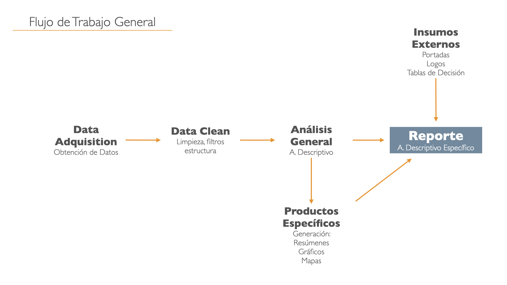
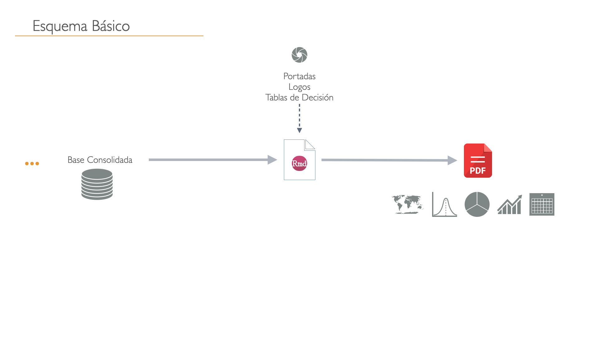
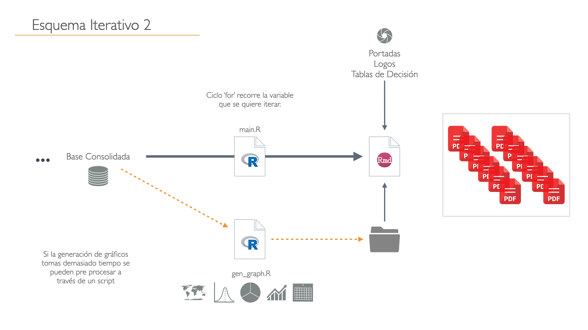

9 Flujos de Trabajo
9.1 Flujo de Trabajo General
Denominaremos Flujo de Trabajo General a un proceso general de análisis de datos y concluir en oun reporte. Comienza con la Adquisisón de datos, ya sea cargando los datos directamente o conectarse a una base de datos.Posteriormente se puede establacer como la siguiente etapa denominada Data Clean o limpiza de datos correspondiente a la preparación de estos para ser insumo para análisis profundos, esta epata se realiza en R en el caso del presente curso. Análisis de Datos corresponde a la etapa donde se realiza el resumen o análisis de datos y se transforma en información, se conluyen resuemenes, tablas, gráficos, mapas y todo lo que sirva para explicar o reforzar las conclusiones de estos análisis, estos productos se pueden crear y almacenar para ser consumidos en el proceso posterior. Finalmente es la etapa del reporte que se realiza con R y Markdown, que consume los productos derivados de la etapa anterior e insumos externos que puede estar relaciones con el estilo y personalización del reporte como son portadas y logos.

9.2 Esquema Básico
Para cumplir el esquema anterior se puede realizar de muchas formas, a continuación se explica el modelo básico para generar un informe. El principal elemnto es el Reporte RMarkdown que realiza todo, lee los datos, analiza, generar graficos y construye el documento.
 Es recomendable para informes únicos y sencillos.
9.3 Esquema Iterativo
El esquema iterátivo es más avanzado y está orientado para realizar múltiples reportes similares pero con diferentes unidades de análisis (personas, meses, comunas, sucursales, etc.). Este flujo de trabajo consta de dos elementos escenciales primero un reporte agnóstico o estandar que permita hacer el resultado variable de acuerdo a los datos de entrada pero manteniendo la estructura similar. El segundo elemento es una script en R que llamaremos main.R el que será el encargado de orquestar la ejecución de los reportes de forma iterativa.

Este esquema es el recomendable seguir para cumplir con los objetivos del curso.
9.4 Esquema Iterativo 2
Este segundo esquema iterativo en esencia el similar al anterior con la unica variaedad es que para la generación de productos de análisis se realice de forma independiente y con anterioridad del reporte, y solo el reporte solo lea los resultados y no calcule. Es útil cuando la generación de estos productos tome mucho tiempo de cálculo, como ocurre en ocasiones con modelos estadísticos o de machine learning, o mapas inclusive. Lo anterior permite que el tiempo de ejecución (renderizado) del reporte sea muy eficiente y rápido.

Recomendable para usuarios más avanzados y cuando sus análisis sean de alto costo computacional y tiempo de ejecución.